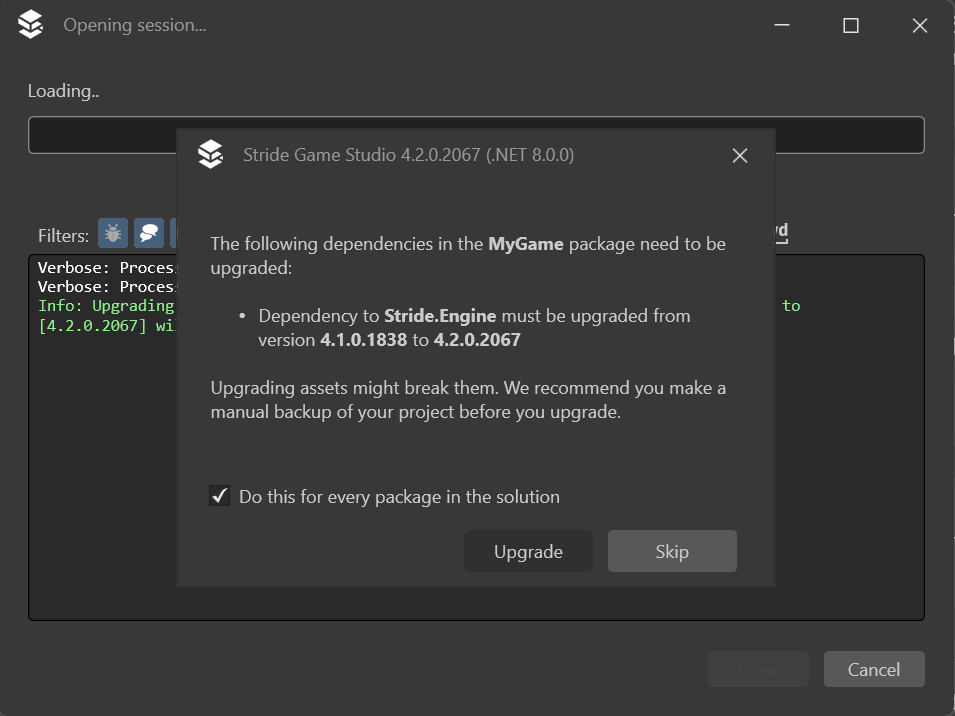
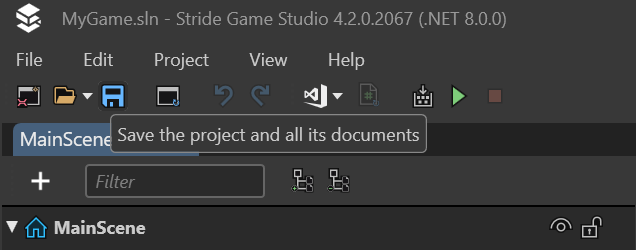

Update Stride
Beginner
Updating Stride is a straightforward process, but it's important to follow the steps carefully to ensure a seamless transition. Below are the guidelines for updating both the Stride engine and your existing projects.
Note
The instructions provided here can be used as a general guide for updating to any new version of Stride.
Updating Stride
- Update Visual Studio 2022: Ensure that you have the latest version of Visual Studio 2022. This is crucial for compatibility with the latest Stride version. After updating Visual Studio, restart your computer to apply the changes fully.
- Stride Launcher Instructions: Open the Stride Launcher. Follow the instructions provided to update or install the Visual Studio plugin for Stride. This step is essential for integrating the latest version of Stride with your development environment.
- Restart Again: After completing the installation or update of the Visual Studio plugin, restart your computer once more. This helps to ensure that all components are correctly loaded and ready for use.
Updating Your Project
- Version Control: Before proceeding with the update, confirm that your project is under version control with all current changes committed. This provides a safety net, allowing you to revert to the previous state if needed. If you're not using version control, ensure you have a backup of your project.
- Opening the Project: When you open a project created with an older version of Stride, a dialogue will appear, prompting you to update the project. Make sure to check the option to apply the update to all packages in the solution. Additionally, you can verify later whether all packages have been updated by checking your project files, specifically the
.csprojfiles.  Dialog prompting for project update in Stride. - Saving the Project: After Stride updates the project, it's crucial to save it immediately. This step prevents the project from being in an undefined state and solidifies the changes made during the update. 
- Rebuild and Reload: Finally, rebuild the project and reload assemblies. This ensures that all components are up-to-date and properly synchronized with the new version of Stride.
By following these steps, you can smoothly transition to the latest version of Stride, taking full advantage of the new features and improvements it offers. Remember, these procedures are designed to provide a hassle-free update experience and safeguard your project against potential issues.